DOCUMENTAÇÃO OFICIAL / RPForge 1.0.1
Seu pacote.
Seu próximo addon.
Converta seus pacotes para o FiveM, gere YTYPs e, no plano Pro, prepare suas roupas para texturização, Neon ou separação de pele. Este guia acompanha você da instalação ao primeiro resultado.

Nenhum assunto encontrado. Tente “spawn”, “YTYP”, “Pro” ou “pele”.
01 / Comece aqui
Seu primeiro addon
Você escolhe a pasta, confere o que será criado e manda converter. O arquivo RPF original permanece no lugar.
O caminho mais curto
- Coloque o arquivo .rpf em uma pasta fácil de encontrar.
- Clique com o botão direito nessa pasta e escolha Converter com RPForge.
- Na janela rápida, confira os nomes e os destinos; pelo app completo, escolha Converter RPFs na barra lateral.
- Use Revisar conversão quando estiver no app completo. Na revisão, confira o resumo e clique em Converter agora.
- Ao terminar, clique em Abrir resultado para encontrar o addon.
Antes de usar no servidor
Abra o recurso no seu ambiente de testes do FiveM. O RPForge confere a estrutura dos arquivos, mas o teste no jogo é que confirma aparência, colisões, sons e dependências.
Gratuito, sem conta e sem terminal
Converter RPFs e Gerar YTYP são gratuitos e não pedem login. Você não precisa instalar Node.js nem abrir comandos: o instalador inclui o necessário. Somente as ferramentas de roupas exigem uma conta com o plano Pro.
02 / Instalar
Instale e abra o RPForge
O instalador da v1 inclui a interface, o runtime e os documentos de uso. Baixe somente pelos canais oficiais do RPForge.
Instalação no Windows
- Feche a janela do RPForge antes de instalar uma atualização.
- Abra o instalador, leia os termos de uso e a licença e aceite para continuar.
- Consulte a privacidade e os avisos completos dos componentes no seletor de documentos do instalador, mesmo sem conexão com a internet.
- Leia a etapa de confiança local. Para habilitar o menu moderno, autorize a instalação do certificado e confirme o administrador. Se recusar, o app e o menu clássico continuam disponíveis.
- Confira a pasta sugerida. O nome atual da pasta é RPForge.
- Conclua a instalação. A opção Abrir o RPForge inicia o app; depois, você também pode usar o menu Iniciar.
Pasta padrão
Esse é o endereço usado pelo Windows para a pasta do aplicativo no seu usuário. Você pode mantê-lo durante a instalação.
%LOCALAPPDATA%\Programs\RPForgeO que você precisa
- Windows 11 em um computador compatível com aplicativos x64.
- Espaço disponível para o aplicativo, os pacotes e os addons que serão criados.
- Arquivos de GTA V Legacy em um dos tipos aceitos pelo RPForge.
Sobre esta edição
A v1 usa certificado local, sem validação pública de identidade. A autorização adiciona confiança em TrustedPeople para todos os usuários do computador e também vale para outros arquivos assinados com a mesma chave. Não há garantia de remover alertas. A instalação em um Windows sem versões anteriores ainda precisa ser validada. A desinstalação não remove automaticamente a confiança.
03 / Conhecer a janela
Tudo começa pela pasta
A barra lateral reúne Início, as ferramentas, Como usar e, no rodapé, a sua conta.
Como se orientar
- Início: mostra as ferramentas em dois grupos, Arquivos e recursos e Roupas e geometria. Cada uma indica Gratuito ou Requer Pro.
- Ferramentas: a lista da barra lateral tem busca e permite alternar entre as ferramentas sem perder as escolhas de cada fluxo.
- Selecionar pasta: abre o seletor de pastas do Windows e inicia a análise ao confirmar.
- Configurar, Revisar e Resultado: as etapas da conversão de RPF, da escolha dos nomes até o que foi criado.
- Conta: o botão no rodapé da barra lateral mostra Entrar ou o seu nome quando a conta está conectada.
04 / Ações rápidas
Direto pelo botão direito
As ações rápidas abrem uma janela compacta para a tarefa escolhida no Explorador de Arquivos.
Converter RPF e Gerar YTYP
Clique com o botão direito na pasta e escolha Converter com RPForge ou Gerar YTYP com RPForge. A conversão mostra uma revisão antes de gravar; o YTYP começa automaticamente. Essas ações são gratuitas e funcionam sem login.
Roupas, com o plano Pro
Em um arquivo .ydd, numa pasta ou no espaço vazio dentro dela aparecem Exportar para OBJ com RPForge, Converter roupa para Neon com RPForge e Separar pele com RPForge. Sem sessão conectada, a janela mostra primeiro o login e depois retoma a peça.
Os itens de roupas só aparecem depois que o app confirma uma licença Pro válida neste computador. As ações rápidas não consultam versão nem atualizações.
05 / Planos Free e Pro
O que é gratuito e o que é Pro
Converter RPFs e Gerar YTYP são gratuitos. As três ferramentas de roupas fazem parte do plano Pro.
| Ferramenta | Acesso |
|---|---|
| Converter RPFs | Gratuito. Funciona sem conta e sem conexão. |
| Gerar YTYP | Gratuito. Funciona sem conta e sem conexão. |
| Roupas para OBJ, Roupas para Neon e Separar pele | Pro. Exigem login e uma licença Pro ativa neste computador. |
Como o Pro é liberado
O plano Pro é concedido manualmente pela equipe do RPForge à sua conta. Não há compra, pagamento ou ativação dentro do aplicativo. Depois da liberação, abra Conta e use Atualizar autorização.
Os itens de roupas no botão direito do Windows só aparecem com o Pro ativo. Os arquivos continuam sendo processados no seu computador.
06 / Conta e login
Sua conta, quando a ferramenta pede
A conta é opcional para converter RPFs e gerar YTYP. Para as ferramentas de roupas, ela é obrigatória e precisa ter o plano Pro.
Entrar no aplicativo
Clique em Entrar, no rodapé da barra lateral. Informe e-mail e senha ou escolha Discord, Google ou GitHub. Se sua conta usa segundo fator, confirme com o autenticador ou um código de recuperação.
Entrar com um provedor
O provedor abre no navegador padrão do Windows. Depois de entrar, confira a conta e o computador na página rpforge.dev/conectar-app/ e autorize. Volte ao app: seu nome aparece na barra lateral.
Computadores conectados
Cada conta usa até dois computadores. Em Conta, Gerenciar conta e computadores mostra as vagas e permite desconectar instalações antigas. Não autorize pedidos que você não iniciou no app.
07 / Converter um RPF
Escolha a pasta do pacote
O RPForge procura os arquivos diretamente na pasta escolhida. Você pode reunir vários RPFs nela para analisar de uma vez.
Pelo botão direito
No Explorador de Arquivos, clique com o botão direito na pasta e escolha Converter com RPForge. Você também pode clicar no espaço vazio dentro da pasta. A janela abre e começa a análise.
Pelo aplicativo
Abra o RPForge, escolha Converter RPFs na barra lateral e use Selecionar pasta. Escolha a pasta que contém os arquivos .rpf. A análise começa ao confirmar a pasta.
Não é preciso extrair o RPF antes. Pacotes RPF que estejam dentro de outro RPF são lidos pelo aplicativo.
08 / Alterar o spawn
Escolha o nome do carro
Spawn é o nome usado para chamar o veículo no jogo. Se quiser manter o original, deixe o campo como está.
Para alterar
- Encontre o veículo na lista de Configurar.
- Edite o campo Nome no jogo do veículo e digite o novo spawn.
- Clique em Revisar conversão. O RPForge confere a alteração antes de liberar a conversão.
Exemplo de nome válido
Use letras, números ou _. Comece com uma letra e limite o nome a 63 caracteres. Maiúsculas e minúsculas são aceitas e mantidas. Evite espaços e acentos.
MIAMIGTEm roupas, mapas e outros conteúdos, editar o nome muda a pasta do recurso. As coleções de roupas e os nomes internos desses arquivos são preservados.
09 / Pastas existentes
Decida o que fazer com a pasta
Se já existir uma pasta com o nome de saída, o RPForge pede uma escolha antes de continuar.
| Escolha | O que acontece |
|---|---|
| Cancelar este item | Preserva a pasta existente e não converte esse RPF. |
| Alterar o nome da pasta | Edite Nome da pasta de saída e revise de novo para criar a saída em outra pasta. |
| Preservar backup e substituir | Guarda a pasta antiga em um backup e cria uma nova saída no lugar. |
Na primeira tentativa, prefira uma pasta livre. Mantenha os backups até terminar o teste do addon no jogo.
10 / Revisar e converter
Confira antes de gravar
Revisar mostra o resumo da operação. O addon só é gravado quando você clica em Converter agora.
O que conferir
- O nome no jogo ou o nome do recurso está correto?
- A pasta de saída é a que você esperava?
- Há avisos sobre arquivos que não vieram no pacote?
- A escolha para pastas existentes está correta?
Se precisar corrigir
Clique em Voltar, faça a alteração e avance novamente. Os campos serão validados ao revisar. Quando estiver tudo certo, use Converter agora e aguarde o resultado.
11 / Encontrar o addon
Seu addon está na pasta de saída
Depois da conversão, o resultado informa o que foi criado. Falhas e cancelamentos aparecem separadamente.
Abrir resultado
Use Abrir resultado, ou Abrir esta pasta em cada item, para localizar o recurso criado. Quando houver vários RPFs, confira o resultado de cada saída.
Nova operação
Limpa o fluxo da janela e permite escolher outra pasta. Os addons que já foram criados permanecem no disco.
O RPF original fica preservado ao lado da saída. O RPForge não coloca um relatório JSON dentro do addon.
12 / Levar ao FiveM
Teste o recurso no servidor
Ao terminar, você terá uma pasta de recurso com os arquivos organizados para o FiveM.
Exemplo de saída de um veículo
fxmanifest.lua é o arquivo que apresenta o recurso ao FiveM. data guarda as configurações; stream guarda modelos e texturas. As peças de tuning ficam em stream/mods quando houver essas peças no pacote.
MIAMIGT/
fxmanifest.lua
data/
stream/
mods/Para colocar no servidor
- Copie a pasta completa do addon para a área de recursos do seu servidor.
- Peça ao responsável pelo servidor para ativar o recurso com o nome da pasta. A tela Resultado mostra o nome usado no comando ensure.
- Entre no ambiente de testes e confira o conteúdo. Para veículos, use o spawn que você manteve ou escolheu.
- Confira aparência, texturas, tuning e sons antes de usar em produção.
O RPForge não altera sua base de testes nem o arquivo server.cfg. A ativação no servidor é feita por você ou pela equipe que administra a base.
13 / Tipos de conteúdo
Além dos veículos
O RPForge identifica o conteúdo encontrado. Você não precisa escolher um modo de conversão antes de analisar o RPF.
| Conteúdo | O que conferir |
|---|---|
| Veículos | Spawn, tuning, texturas, sons e funcionamento no jogo. |
| Roupas | Coleção identificada e arquivos necessários. O app não inventa coleções ausentes. |
| Mapas e interiores | Arquivos do mapa e dependências. Salas e portais precisam vir no conteúdo original. |
| Props e objetos | Modelos, texturas e arquivo YTYP quando necessário. |
| Animações e texturas | O recurso é organizado para streaming; o uso depende da configuração do servidor. |
| Peds, armas e áudio | Somente os tipos e arquivos reconhecidos pelo aplicativo. |
Quando o app recusa um pacote
Um arquivo pode depender de configurações que o RPForge ainda não reconhece. Nesse caso, confira o erro. Evite apagar arquivos do pacote apenas para forçar a conversão.
Pacotes que misturam veículos com conteúdos especiais podem precisar ser separados. Um addon criado sem erro ainda deve ser testado no FiveM.
14 / Gerar YTYP
Gere YTYPs dos seus modelos
YTYP é um arquivo usado pelo jogo para reconhecer objetos. O RPForge pode gerar um YTYP básico a partir de modelos .ydr.
Pelo app ou pelo botão direito
- Coloque os arquivos .ydr diretamente na pasta escolhida.
- Pelo app, escolha Gerar YTYP na barra lateral, selecione a pasta e clique em Gerar YTYP.
- Pelo botão direito, use Gerar YTYP com RPForge. A janela rápida inicia a geração automaticamente.
- Ao terminar, abra a pasta indicada no resultado.
YTYPs existentes são preservados e a nova saída recebe um sufixo quando necessário. Um YTYP básico não recria salas, portais ou outros detalhes de um interior complexo.
15 / Roupas para OBJ
Leve a roupa para pintura
Ferramenta Pro. Exporta uma peça .ydd para OBJ e MTL, com UVs, normais e grupos de materiais, para texturizar em outro programa.
Como exportar
- Escolha Roupas para OBJ na barra lateral ou Exportar para OBJ com RPForge no botão direito de um .ydd.
- Selecione o YDD, o YTD correspondente (opcional se a textura estiver no YDD), o nível de detalhe e a pasta de destino.
- Clique em Exportar para OBJ. Ao terminar, confira a prévia 3D da malha entregue.
Limites
Somente OBJ e MTL são salvos, sem sobrescrever arquivos. Texturas, rig, animações, shaders do GTA, normal e specular maps não são exportados. Aceita YDD e YTD de GTA V Legacy; peças sem textura difusa, UVs ou normais são recusadas. O OBJ serve para pintura, não para voltar ao jogo.
16 / Roupas para Neon
Uma versão emissiva da roupa
Ferramenta Pro. Cria uma cópia da roupa com material emissivo, preservando malha, rig e texturas.
Como converter
- Escolha Roupas para Neon na barra lateral ou Converter roupa para Neon com RPForge no botão direito.
- Selecione a roupa isolada, o YTD correspondente e a pasta de destino.
- Clique em Converter para Neon. O resultado mostra os nomes e o caminho dos novos arquivos.
Limites
Os novos arquivos recebem um ID livre; o YTD é copiado sem alterar a imagem e os originais ficam intactos. Peças com pele são recusadas: use Separar pele antes. Aceita roupa freemode de GTA V Legacy com um drawable por YDD. A conferência do app é estrutural; veja a aparência no FiveM.
17 / Separar pele
Separe a roupa da pele
Ferramenta Pro. Analisa uma peça que mistura roupa e pele e, depois da sua revisão, gera os dois em arquivos separados.
Como começar
- Escolha Separar pele na barra lateral ou Separar pele com RPForge no botão direito.
- Selecione o YDD com roupa e pele, o YTD (opcional se estiver embutido) e a pasta de destino.
- Clique em Analisar peça. A análise não grava nada e abre a revisão 3D.
A separação não aplica Neon nem cria texturas brancas. Para uma roupa Neon com pele, separe primeiro e converta só a parte da roupa.
18 / Revisar a separação
Confira cada face antes de separar
A análise sugere o que é pele e o que é roupa. A sugestão precisa ser conferida, principalmente em peças editadas.
Cores da revisão
- Laranja: pele. Azul: roupa. Roxo: faces incertas, que precisam de uma decisão.
- Todos os LODs disponíveis podem ser revisados. Trocar de LOD limpa a seleção atual.
Marcar faces
- Ferramentas: Face (V), Área (B) e Pincel (C). [ e ] ajustam o raio do pincel.
- Shift adiciona à seleção e Alt remove. Somente faces visíveis pode ser desativado para atravessar a peça.
- Use Marcar pele ou Marcar roupa. Ctrl+Z desfaz a atribuição; Restaurar sugestão volta ao início.
- Câmera: botão do meio orbita, botão direito move e a roda aproxima. Wireframe mostra a malha.
Separar arquivos
O botão fica bloqueado enquanto houver faces incertas, e o LOD alto precisa ter pele e roupa. A saída tem dois YDDs com IDs livres, cada um com sua cópia do YTD, nas subpastas Roupa e Pele do destino.
O app confere os arquivos gerados, mas não certifica a classificação. Teste a aparência no FiveM antes de usar no servidor.
19 / Arquivos e backups
Cuide dos seus originais
O RPForge preserva o pacote de origem. Ainda assim, mantenha uma cópia dos seus arquivos de trabalho antes de organizar um acervo grande.
Durante uma conversão de RPF
- A análise e a revisão não criam o addon.
- A conversão prepara a saída e confere os arquivos gravados antes de entregar a pasta.
- Pastas existentes exigem uma escolha explícita.
- O backup fica ao lado da saída, com um nome que identifica a cópia preservada.
Na geração de YTYP
Os modelos originais e os YTYPs que já existem permanecem intactos. Se houver muitos modelos, o aplicativo divide a saída em mais de um YTYP.
O que pode mudar no veículo
Ao trocar o spawn, o app ajusta os nomes de arquivos e as referências correspondentes. Opções visuais de tuning sem o modelo necessário no RPF são removidas para evitar escolhas quebradas no jogo. Confira esses ajustes na revisão.
Mantenha o backup até testar. Se precisar voltar, preserve a saída atual e use a cópia anterior como ponto de partida.
20 / Resolver avisos
Leia o motivo antes de tentar de novo
Um aviso pede atenção; um erro pode impedir aquela conversão. Quando vários RPFs são analisados, confira o resultado de cada um.
| Mensagem ou situação | O que fazer |
|---|---|
| O RPF mudou depois da prévia | Analise novamente a pasta antes de converter. |
| Nome inválido | Corrija o campo e use Revisar conversão novamente. |
| Destino já existe | Escolha uma ação para a pasta existente. |
| Dependência externa | Confira se o servidor tem o recurso ou arquivo mencionado. |
| Esta ferramenta é exclusiva do plano Pro | Entre com uma conta Pro ou use as ferramentas gratuitas. O Pro é liberado pela equipe do RPForge. |
| A licença deste computador não pôde ser validada | Abra Conta e use Atualizar autorização. Confira a conexão e a data e hora do Windows. |
Ao pedir ajuda, informe a versão do app, o texto do erro e o passo em que ele apareceu. Não envie credenciais nem seu acervo em relatos públicos.
21 / Dúvidas frequentes
Quando algo não aparece
Estas verificações resolvem os problemas mais comuns antes de repetir a operação.
O menu do botão direito não apareceu
Confira se você clicou em uma única pasta. Converter com RPForge aparece quando ela contém um .rpf; Gerar YTYP com RPForge, quando há um .ydr. Os itens de roupas exigem Pro ativo. Se necessário, procure em Mostrar mais opções ou abra o app pelo menu Iniciar.
A pasta parece vazia no aplicativo
Escolha a pasta que contém os arquivos, não uma pasta acima. Verifique as extensões. Um ZIP ou RAR precisa ser extraído antes; o arquivo .rpf dentro dele é o que o conversor lê.
O RPF foi recusado
A versão atual aceita arquivos abertos de GTA V Legacy. Pacotes criptografados e conteúdo de GTA V Enhanced não são aceitos. Use uma origem compatível e confira o texto do erro.
O carro converteu, mas não funciona no jogo
Confira se o recurso foi ativado e se você está usando o spawn correto. Texturas, sons ou configurações compartilhadas podem depender de outros recursos. O RPForge não corrige problemas do modelo original.
O tamanho em disco é o FPS ou o uso de VRAM?
Não. O tamanho mostra quanto os arquivos ocupam no disco. Esta versão não promete ganho de FPS nem otimiza texturas automaticamente.
22 / Atualizar ou remover
Mantenha a versão certa
Use os arquivos fornecidos pela equipe do RPForge. O nome atual do aplicativo e da pasta de instalação é RPForge.
Atualizar
- O RPForge não se atualiza sozinho. Baixe o instalador da nova versão em rpforge.dev; em Como usar, o botão Instalação e atualização manual abre a página de instruções.
- Feche o aplicativo e aguarde qualquer operação terminar.
- Abra o instalador e confira o nome e a origem do arquivo.
- Depois de instalar, abra o app e teste um pacote conhecido.
Remover do Windows
Abra Configurações > Aplicativos > Aplicativos instalados, encontre RPForge e escolha desinstalar. Os RPFs e addons criados nas suas pastas de trabalho permanecem no disco.
Versão e licença
Este guia acompanha o RPForge 1.0.1, com licença proprietária. Os documentos de uso e os avisos de terceiros acompanham o instalador e a pasta legal da instalação.
O RPForge não faz upload dos seus assets e nada é publicado no seu servidor automaticamente. O login só é exigido pelas ferramentas Pro de roupas.
23 / Consulta rápida
Os nomes que você vai encontrar
Você não precisa decorar as extensões. Use esta página quando surgir uma palavra nova durante a conversão.
| Nome | Em poucas palavras |
|---|---|
| RPF | Pacote que reúne arquivos de conteúdo do GTA V. |
| Addon ou recurso | Pasta organizada para adicionar conteúdo ao FiveM. |
| Spawn | Nome usado para chamar um veículo no jogo. |
| Stream | Pasta que reúne modelos, texturas e outros arquivos carregados pelo jogo. |
| Meta / data | Arquivos de configuração do conteúdo. |
| YDD | Arquivo de modelo de roupas e peds. |
| YDR | Arquivo de modelo usado por objetos. |
| YTD | Arquivo que reúne texturas. |
| YTYP | Arquivo que apresenta objetos ao jogo. |
| Backup | Cópia preservada da pasta anterior. |
| Dependência | Outro recurso ou arquivo necessário para o conteúdo funcionar. |
| LOD | Nível de detalhe do modelo: alto, médio, baixo ou muito baixo. |
| OBJ / MTL | Malha 3D e materiais em formatos abertos, para pintura. |
| Plano Pro | Acesso às ferramentas de roupas, liberado pela equipe do RPForge. |
Antes de encerrar
Confira o resultado, teste o addon no FiveM e mantenha seus originais. Para rever um passo, volte ao índice deste guia.